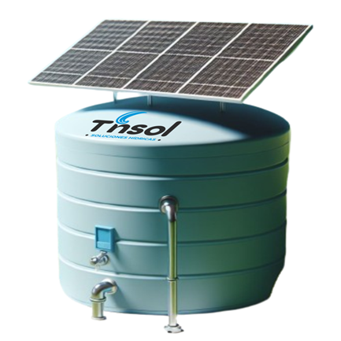
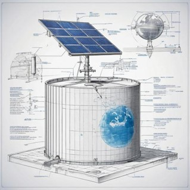
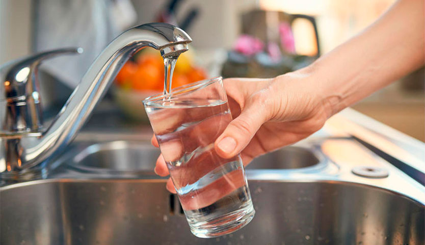
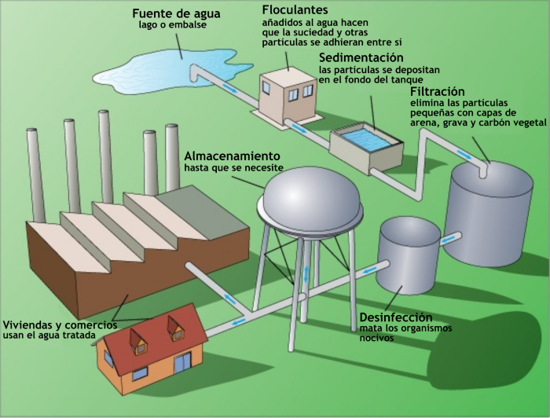

| a) El futuro de la innovacion |
b) Nuestros tinacos son ecologicos |
c) La importancia de cuidar el agua |
d) Somos clave en la innovacion |
|  |
 |
 |
 |
¿Quienes somos?
Ofrecemos soluciones de agua y energía, aprovechando tecnologías y técnicas integradas en los tinacos para un almacenamiento eficiente. Garantizamos un acceso confiable y sostenible. proporcionando servicios integrales de instalación y mantenimiento. Imaginen un mundo donde un simple componente, como un tinaco pueda ser la respuesta a los problemas más comunes en el suministro de agua. |
Nos especializamos en soluciones integrales y sostenibles de agua y energía, empleando tecnología solar. Abordamos eficazmente los desafíos del suministro de agua con un enfoque completo que impulsa la preservación ambiental y el desarrollo socioeconómico comunitario. Nuestro concepto central se enfoca en diseñar e implementar sistemas que garanticen acceso al agua potable de calidad, aprovechando los recursos disponibles, solucionando problemáticas como la temperatura, presión del agua y las energías renovables. Siendo impulsores del cambio, estamos comprometidos en enfrentar problemas críticos del agua, mientras promovemos eficiencia energética y sostenibilidad ambiental. |
El agua es esencial para la vida. Todos los seres vivos, incluidos los humanos, dependen del agua para sobrevivir. Es necesario para beber, cocinar, higiene personal y muchas otras actividades cotidianas. Además de su importancia básica, el acceso a agua limpia y segura es crucial para prevenir enfermedades y promover la salud pública. La contaminación del agua puede conducir a la propagación de enfermedades graves como el cólera y la disentería, lo que representa una amenaza significativa para la salud de las personas. Los ecosistemas acuáticos, como ríos, lagos y humedales, son hábitats vitales para una variedad de especies de plantas y animales. Cuidar el agua es fundamental para preservar estos ecosistemas y proteger la biodiversidad. El agua es un recurso clave para el desarrollo económico. Se utiliza en una variedad de industrias, desde la agricultura hasta la fabricación, y es fundamental para la generación de energía hidroeléctrica. Un suministro confiable de agua es fundamental para el crecimiento económico y la prosperidad. |
Ofrecemos soluciones integrales para el suministro de agua y energía, empleando tecnologías térmicas y solares integradas en tinacos para almacenamiento eficiente. Nos comprometemos a proporcionar acceso confiable y sostenible a ambos recursos, ofreciendo servicios completos de instalación, mantenimiento y consultoría adaptados a las necesidades individuales. Destacamos por nuestra dedicación a la sostenibilidad, la satisfacción del cliente y el impulso al desarrollo socioeconómico, contando con socios como Evans, Coitech, RosenVP, Maderas Álvarez y Plásticos Mexicanos. Contribuimos activamente a la conservación del medio ambiente. Nuestros tinacos ecológicos representan innovación al promover la conservación del agua, mejorar la eficiencia energética, presentar diseños vanguardistas y fomentar la conciencia ambiental. |